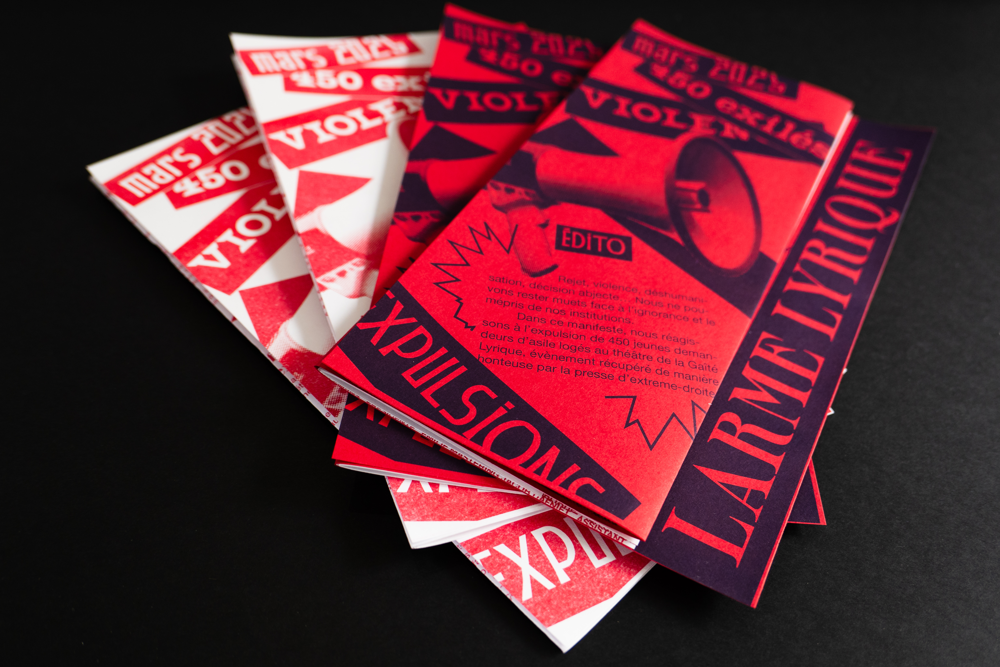
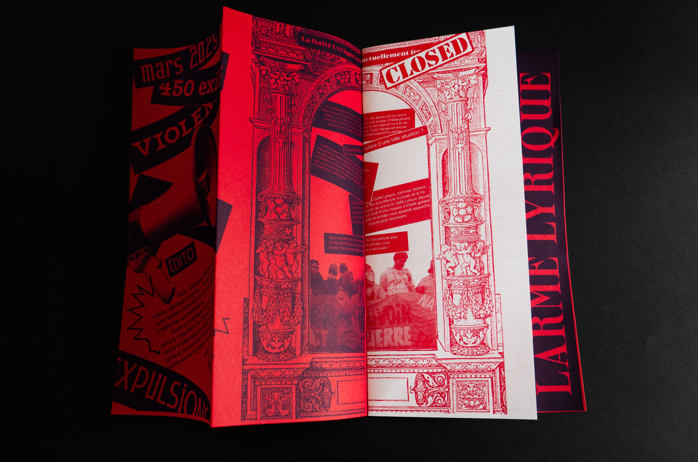
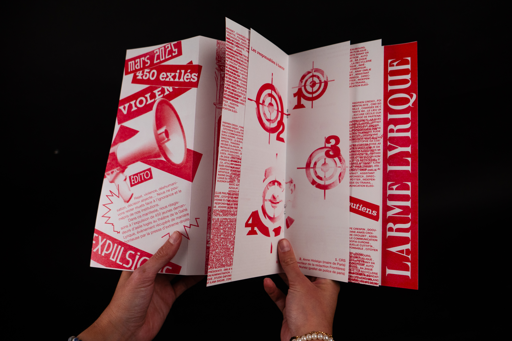
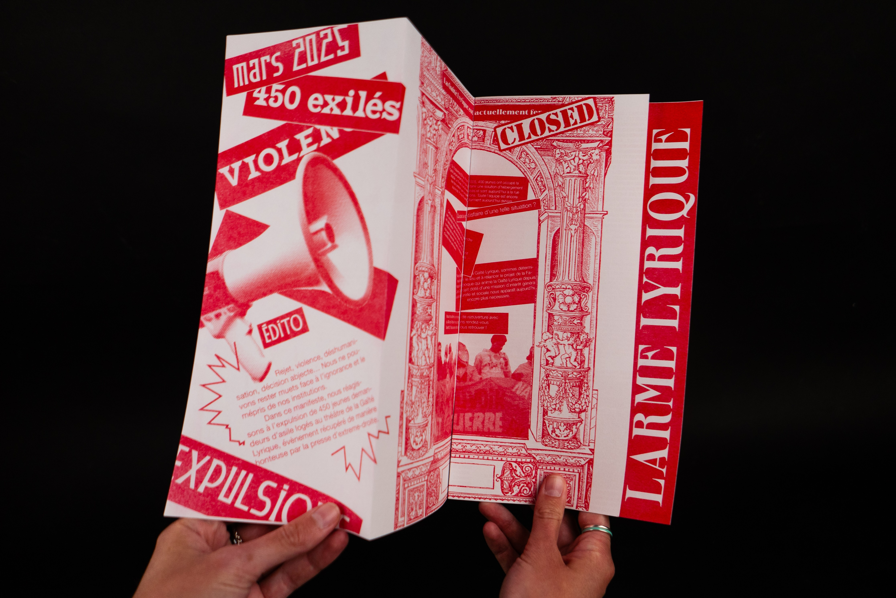
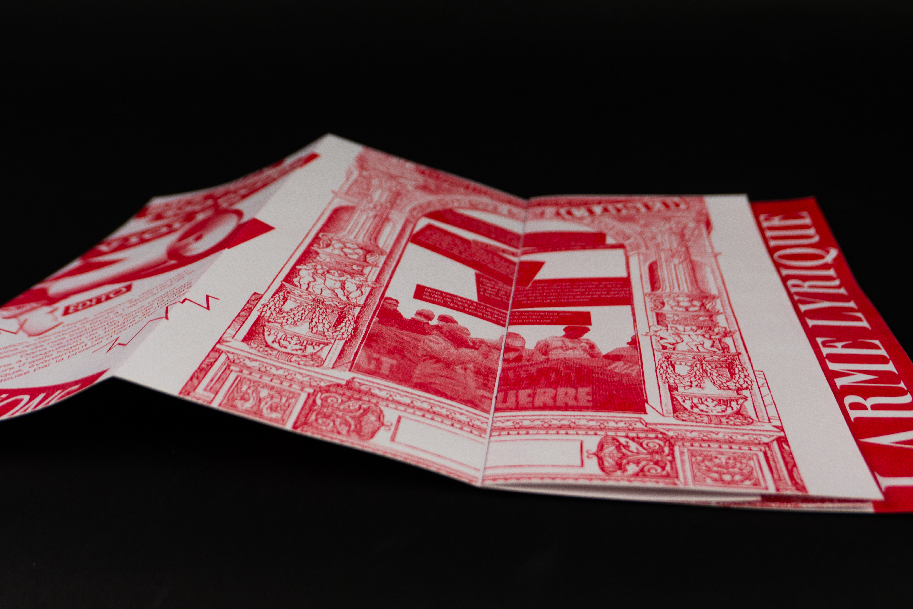
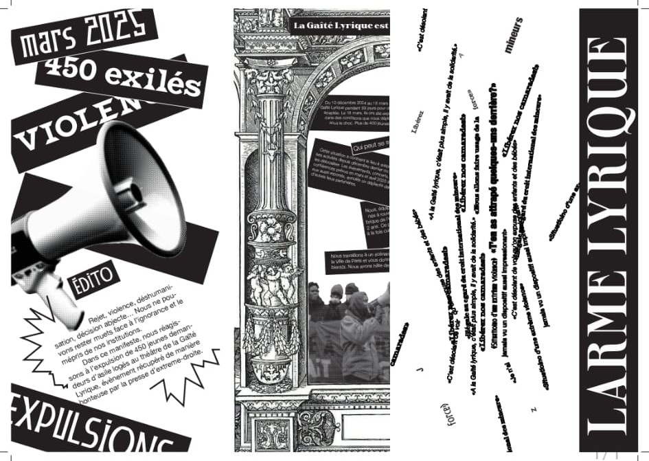

-MANIFESTE-
Impressions en risographie, tirages encre bleue sur papier rouge, encre rouge sur papier blanc
avril 2025
En réponse aux affaires d’expulsions survenues au Théâtre de La Gaîté Lyrique en mars 2025, ce manifeste retrace une partie des événements en se positionnant contre ce déchaînement de violence à l’encontre de l’immigration.
Ici, le graphisme se veut revendicateur et volontairement provocateur, pour donner un visage à ce cri de protestation.





